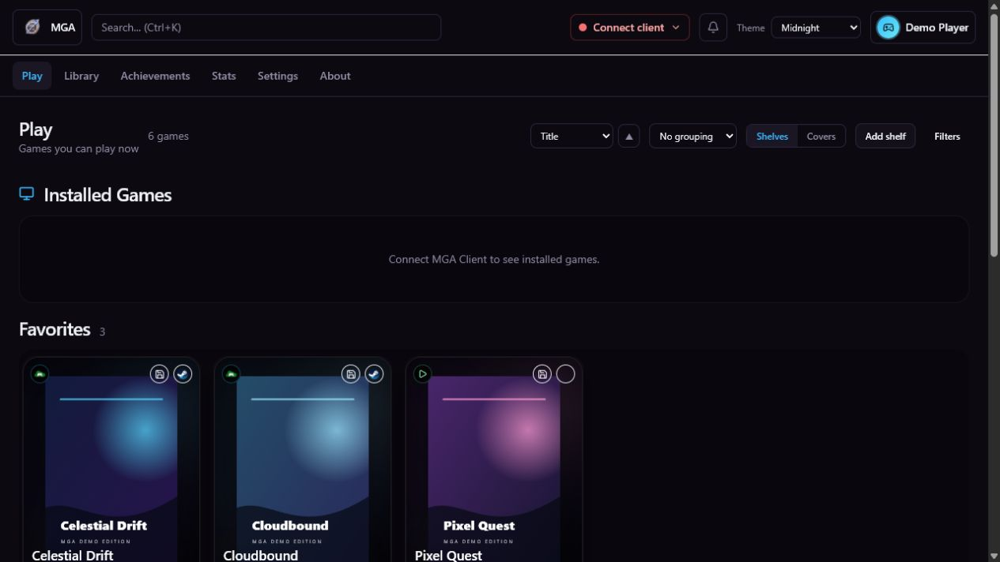
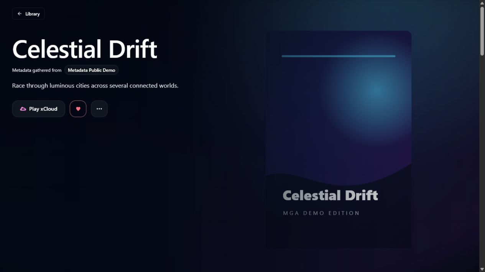

Current interface
Captured from the app, without exposing a real library.
These images were produced from the current MGA build using an isolated fictional profile, generated covers, and no credentials. They show the real interface rather than a hand-drawn marketing mockup.




The repeatable fixture lives in server/cmd/publicdemo. Older screenshots remain in repository history, not in the current public gallery.